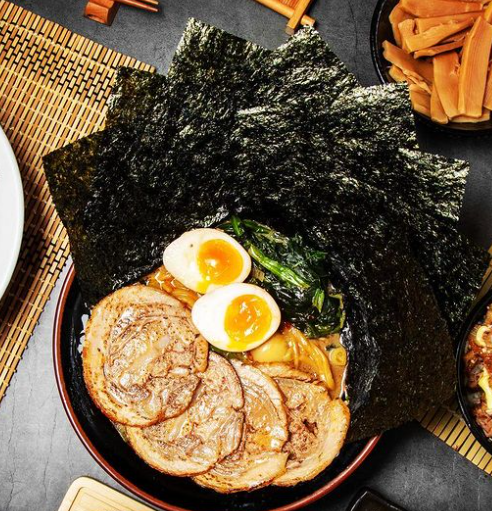

拉麵
「大和家」也是「橫濱家系」的名店！雖然同為橫濱家系，大和家的湯頭又更濃厚一些，不習慣重口味湯頭的人可以選擇淡一點的口味，比較不容易膩口～有醬油和鹽味可以選擇，超高人氣的黃金醬油拉麵是必吃品項，湯中的菠菜可說是靈魂，清爽甘甜的蔬菜，瞬間將油膩的湯頭變得輕盈！
豬排
全台目前已有多家分店，今天介紹位於美麗華的靜岡勝政日式豬排，雖位於美食街的樓層，但有著獨立的店面及座位區，不用跟其他人搶佔美食街座位，真是太棒了！純日式風格的裝潢，厚厚一大本的菜單，打開來看裡頭的菜色類型琳瑯滿目。使用台灣南投的香草豬，肉質Q彈，帶有淡淡的香草味。有別於一般豬肉的口感，酥炸後有著豐富甜美的滋味，粉紅色的色澤更是最完美的熟度！小編點的香草豬腰內豬排套餐，酥軟又入口即化，超厚的厚度，讓愛吃肉的小編大呼過癮。套餐除了比手掌還大的豬排，附加的三樣小菜、高麗菜絲沙拉、味噌湯、茶碗蒸及特選的越光米白飯，這樣的套餐份量組合太豐盛了，多到會吃不完呢。強烈推薦還沒吃過的朋友，一定要來試試「夢幻豬排」！
火鍋
第一次知道台北火鍋【肉老大頂級肉品涮涮鍋】是看到朋友打卡浮誇的肉山金字塔還有大份量肉盤，真的很符合“肉老大”三個字，肉老大菜單提供多種大份量肉盤和海鮮的組合，目前還有打卡送肉活動，肉肉控和海鮮控都可以滿足。